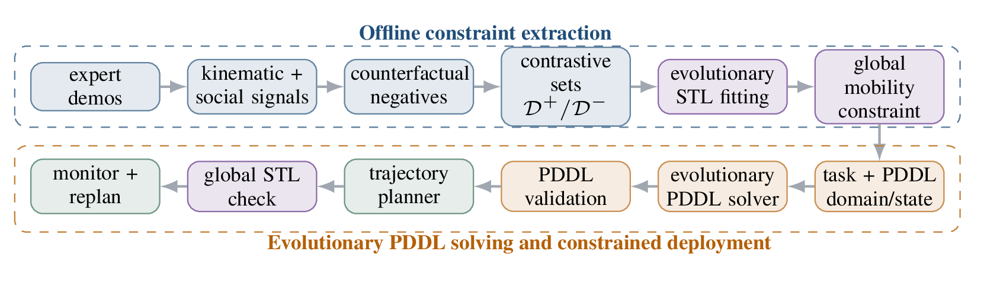
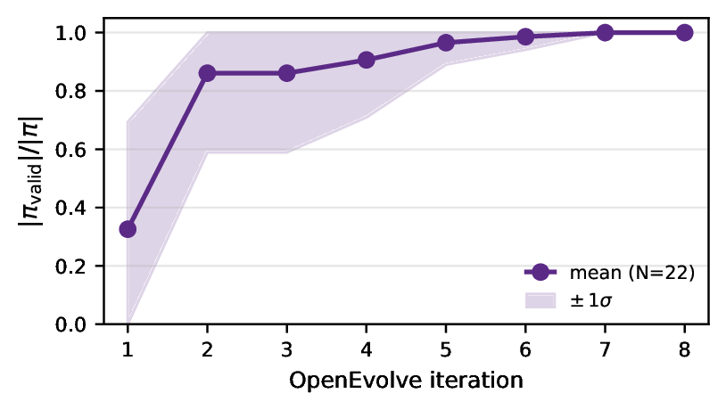
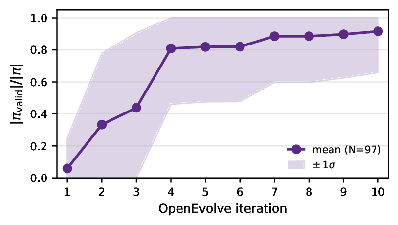
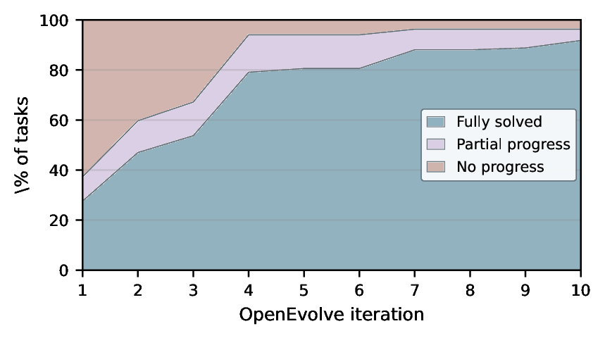
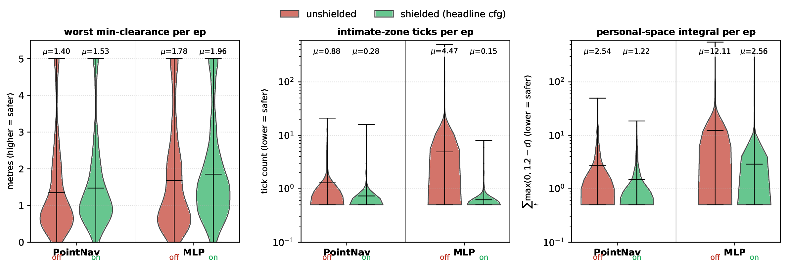
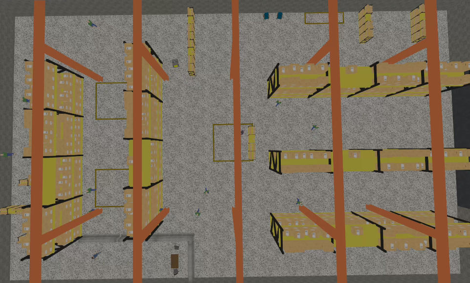
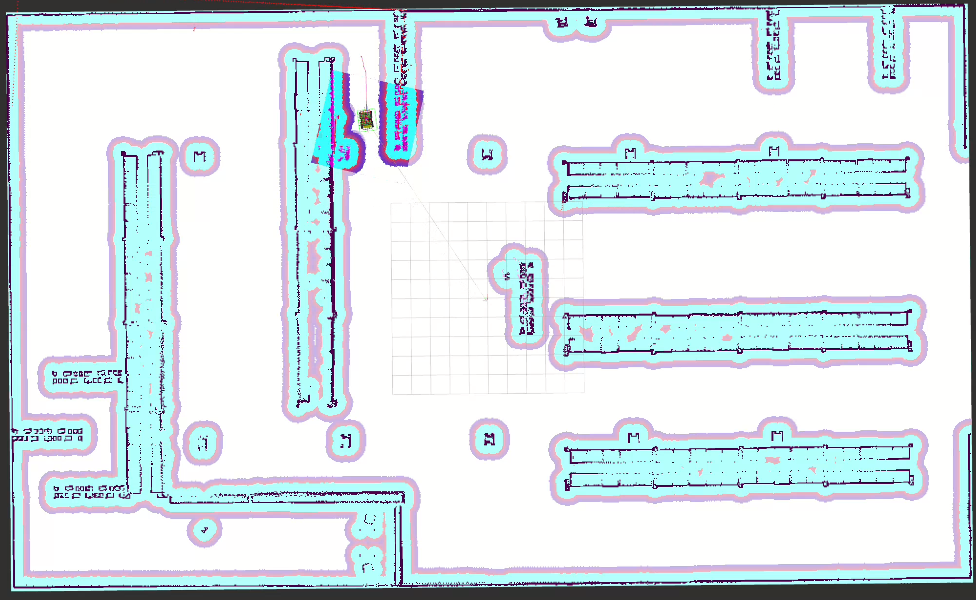
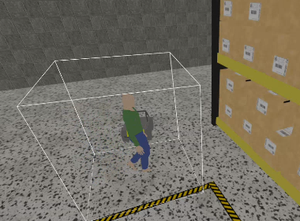
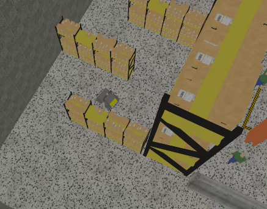

EvoPlan: Evolutionary Neuro-Symbolic Robot Planning with Spatio-Temporal Guarantees
Texas A&M University
Abstract
LLM-based robot planners are fluent but cannot guarantee that their plans are executable or safe. Classical PDDL planners can guarantee these properties, but only after the problem is fully specified, and they make poor use of an LLM's ability to read context and repair plans. This paper presents a neuro-symbolic framework with three parts.
First, an offline procedure that mines a single global Signal Temporal Logic (STL) constraint on mobility from demonstration data. The procedure recovers codified rules (e.g., stopping at red lights, mined from nuPlan driving logs) or population preferences (e.g., social-navigation comfort, mined from SCAND teleoperation), depending on what the demonstrations encode. Because the demonstrations are a one-class signal, we generate the missing negatives with counterfactual perturbations and an LLM violation generator and then fit the constraint by evolutionary search. We use the mined constraint to shield a vision-language driving policy on Bench2Drive and two discrete-action navigation policies on HA-VLN-CE.
Second, an evolutionary PDDL planner: an LLM proposes and repairs plans, programmatic validators decide which ones survive, and the validated portion of the plan grows over iterations. We test the planner on the open-world ALFWorld Text benchmark, where it beats strong baselines and stays robust when the goal vocabulary does not match the action-model vocabulary.
Third, a constrained execution loop: the planner's plan is compiled into waypoints, the waypoints are checked against the mined constraint, and the planner re-plans on a violation.
Method

Mine an STL constraint
Demonstrations contain only acceptable behaviour. Counterfactual perturbations supply the missing negatives, and LLM-guided evolutionary search fits one global STL formula over speed, clearance and social signals.
Evolve PDDL plans
An LLM proposes and repairs plans. A validator cascade (syntax, VAL simulation, goal reachability) decides which ones survive, so the LLM suggests plans but never decides which are accepted.
Check, execute, replan
Each action becomes a waypoint sequence that is checked against the mined constraint before execution. A violation commits the verified prefix and triggers a replan from the updated state.
Results
Evolutionary PDDL planner on open-world ALFWorld Text
Success rate on the 134 unseen tasks. In the misaligned variant, the goal vocabulary (hot / clean / cool) does not match the action vocabulary (heated / washed / chilled). Baseline numbers are reproduced from NL-PDDL (Liu et al., ICLR 2026).
| Method | Aligned SR % | Misaligned SR % |
|---|---|---|
| GPT-4o (direct) | 21 | 17 |
| ReAct (with examples) | 81 | 79 |
| Reflexion-10 | 91 | — |
| NL-PDDL | 94 | 91 |
| EvoPlan (Qwen3-32B) | 98.5 | 98.5 |



The validated fraction of the plan grows monotonically over iterations on hard tasks, although no prefix is explicitly frozen.
Mined constraints shield downstream policies
The same mining procedure recovers rules from nuPlan driving logs and preferences from SCAND teleoperation. Neither shield is trained on the target benchmark.
| Bench2Drive | DS ↑ | Coll. ↓ | Infr. ↓ |
|---|---|---|---|
| Unshielded | 62.96 | 14 | 20 |
| Shielded, α=0 | 65.61 | 4 | 7 |
| Shielded, α=0.30 | 66.20 | 4 | 6 |
| HA-VLN-CE | Shield | SR % ↑ | CT % ↓ |
|---|---|---|---|
| PointNav | off | 58.7 | 38.1 |
| PointNav | on | 57.6 | 18.5 |
| MLP | off | 32.1 | 30.1 |
| MLP | on | 32.7 | 5.2 |

val_unseen (N = 1839 per violin). The shield removes the heavy unsafe tail on both architectures rather than only shifting the mean.Constrained execution loop in Gazebo




PDDL move actions are grounded into routes by Nav2 and checked against the mined constraint before execution. When a pedestrian enters the learned clearance floor, the step is vetoed and the planner replans.
BibTeX
@inproceedings{nukapotula2026evoplan,
title = {EvoPlan: Evolutionary Neuro-Symbolic Robot Planning
with Spatio-Temporal Guarantees},
author = {Nukapotula, Bhavya Sai and Moosavi, Samin and Wang, Haoze and
Duncan, Luke and Shakkottai, Diya and Murali, Varun and
Shakkottai, Srinivas},
booktitle = {Proceedings of the 10th Conference on Robot Learning (CoRL)},
series = {Proceedings of Machine Learning Research},
year = {2026},
eprint = {2607.06724},
archivePrefix = {arXiv}
}